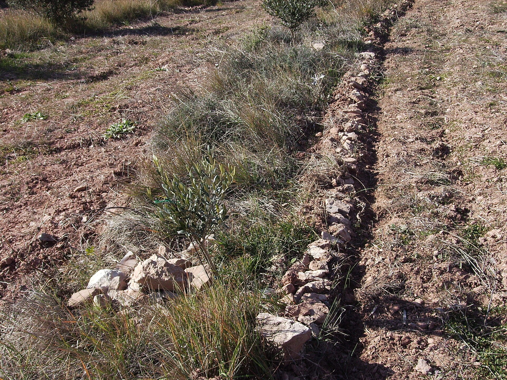

Stone lines & contour stone bunds
Permeable stone lines on the contour that slow runoff and trap soil

What it is
Stone lines – also called contour stone bunds – are lines of stones laid along the contour across gentle slopes. Being permeable, they let water pass through while slowing it down: the runoff spreads and ponds behind the line, sediment and wind-blown seed settle out, and the water soaks in rather than racing off and eroding the field.
They are a classic Sahelian land-rehabilitation technique, cheap and labour-based, used to bring crusted, degraded cropland back into production – often paired with planting pits. In the WOCAT classification they sit between in-situ and micro-catchment water harvesting, working the whole slope line by line.
How it works
- Lay a low, permeable stone line on the contour across the slope, level so water spreads evenly along it
- As runoff reaches the line it slows and spreads; silt and seeds accumulate behind it, gradually building a fertile terrace
- Build lines across the whole slope, spaced so each catches what passes between the lines above
- Because the barrier is permeable it passes excess flow without breaching – it resists the storm damage that solid bunds suffer
- Combine with zaï planting pits between the lines for the strongest land recovery
Key facts
- WOCAT group
- In-situ / micro-catchment
- Barrier type
- permeable (passes excess, resists breaching)
- Cost
- low; labour-based
- Best for
- rehabilitating crusted, degraded cropland
- Suitable slope
- gentle
WOCAT classification
- Measures
- SVStructural · Vegetative
- WOCAT group
- In-situ / micro-catchment water harvesting
- Degradation addressed
- Soil erosion by waterWater degradation (aridification)
Classified per the WOCAT SLM-Technologies classification and the four water-harvesting groups of Mekdaschi Studer & Liniger (2013).
✦Source and links
Drawn from the FAO / ICARDA Webinars Series on Rainwater Harvesting (NENA region, 2022):
- • Frank van Steenbergen & Kifle Woldearegay (MetaMeta) – Module 7
- • Ihab Jnad (ACSAD) – Module 7
- • Wael Abu Rmaileh (UN-ESCWA) – Module 8
Sources (APA, 7th ed.).
- Critchley, W., & Siegert, K. (1991). Water harvesting: A manual for the design and construction of water harvesting schemes for plant production. FAO. Link
- FAO / ICARDA. (2022). Webinars series on rainwater harvesting (WEPS-NENA / Water Scarcity Initiative). Series flyer (PDF)